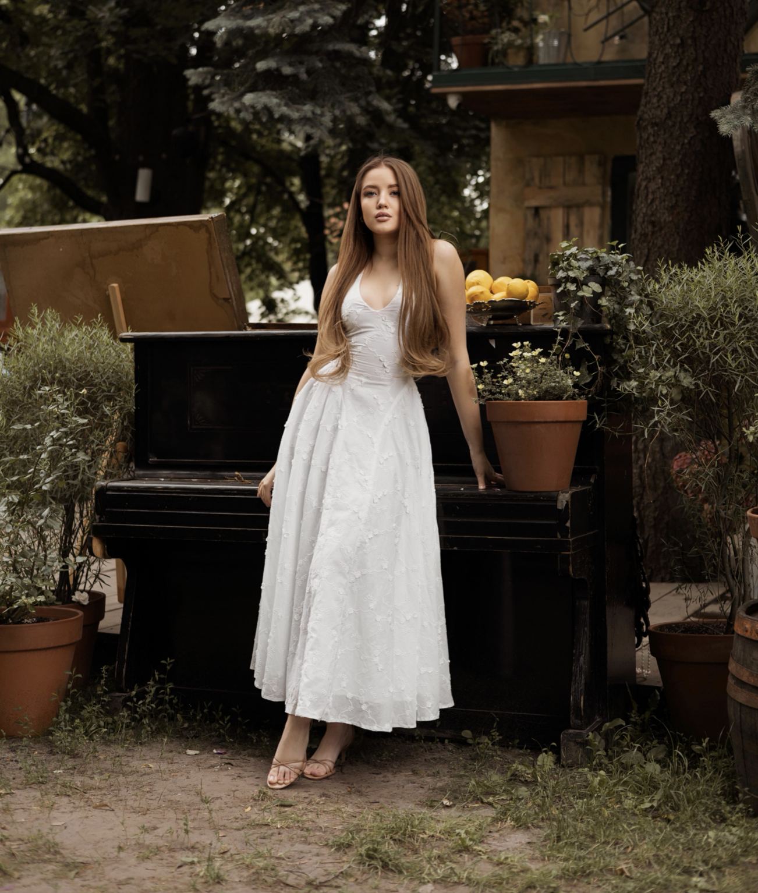
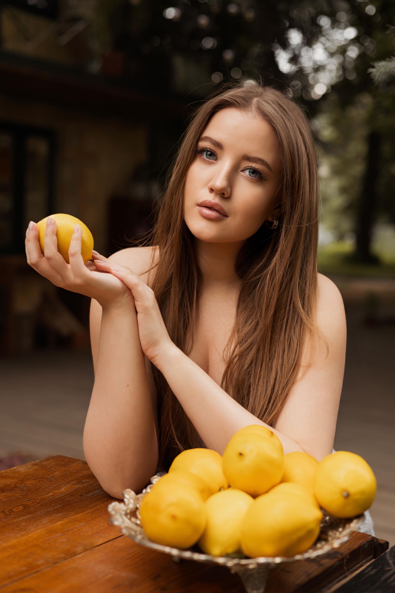

3 місяці роботи
Поступова трансформація без поспіху і перевантаження.

Етичний маркетинг
без маніпуляцій
і вигорання
Створюй свій блог і залучай клієнтів чесно, спокійно та в задоволення.
Переглянути програмуПоступова трансформація без поспіху і перевантаження.
Практика, розбір домашніх завдань та відповіді на запитання.
Підтримка у Telegram, перевірка завдань і супровід протягом усієї програми.
Твій шлях у програмі
За 3 місяці ти пройдеш шлях від хаотичного ведення сторінки до власної системи: зрозумілого позиціонування, живого контенту й етичних продажів, які не викликають сорому.
Тут не буде універсальних формул і маніпуляцій. Ми створюватимемо систему, яка відповідає твоїм цінностям, темпу та професійній етиці.

Програма зсередини
Формат
Група до 8 психологів.
Тривалість
3 місяці послідовної роботи.
Зустрічі
2 рази на тиждень: тематична зустріч і розбір домашніх завдань та Q&A. Тривалість — 60–90 хвилин.
Супровід
Спільний чат у Telegram, AI-промпти для контенту та файли планування в Notion.
Старт
Асинхронна аудіо-подорож — прогулянка для цілепокладання, яка налаштовує тебе на процес ще до першого дзвінка.
Твій маршрут
Бонус до наставництва
Моя авторська практика, яка йде разом із наставництвом — не до нього, а протягом усієї програми.
Це трансформаційна ходьба з однією ціллю у фокусі — активна проявленість у блозі. Потік ідей, сміливість говорити про себе замість мовчання та постійного відкладання.
Ходьба такої тривалості й дистанції розкриває енергію для нових дій. Це практика, яку я сама проходила і яка допомогла мені зрушити з мертвої точки у своєму блозі.
Я пропоную її учасницям як бонус — можливість підключитися та пройти цей рух разом.
Від внутрішньої готовності до конкретних дій.
Про наставницю
Практикуюча психологиня. Веду приватну практику вже п’ятий рік, працюю з парами, зібрала та провела власну групу. Близько 90% моїх клієнтів приходять із блогу.
Я сама пройшла шлях від хаотичного ведення сторінки до сформованої стратегії, тому розумію не лише інструменти просування, а й внутрішні складнощі психолога у проявленості.
Вірю, що маркетинг психолога має триматися на тих самих принципах, що й терапія: чесності, повазі до меж іншої людини та відсутності маніпуляцій.
Чому саме зі мною
Пілотний потік
До 8 учасниць500 €
Для перших трьох учасниць
Можлива оплата трьома рівними платежами протягом програми.
Це спеціальна вартість першого потоку. Надалі ціна програми зросте на 30–50%.
Перед участю ми проведемо безкоштовну діагностичну розмову та разом подивимося, чи підходить тобі програма саме зараз.
Кількість місць обмежена форматом групи
до 8 психологівВідповіді перед стартом
Тут зібрані відповіді на запитання, які найчастіше виникають перед участю у програмі.
Так, програма побудована так, щоб почати з нуля — з розуміння себе та аудиторії, а не з уже готового профілю.
Дві зустрічі тривалістю 60–90 хвилин і домашнє завдання. У середньому потрібно 3–4 години на тиждень. Іноді більше, адже блог — це повноцінна частина професійної роботи.
Записи зустрічей будуть доступні учасницям. Додатково ти зможеш отримати розбір і підтримку в чаті, тому важлива інформація не загубиться.
У групі виникає ефект спільного руху й підтримки колег, які проходять схожий шлях. Якщо тобі ближчий персональний темп і глибина, доступний формат індивідуального супроводу.
Контакти
Напиши мені зручним способом — домовимося про безкоштовну діагностичну розмову та разом подивимося, чи підходить тобі програма.